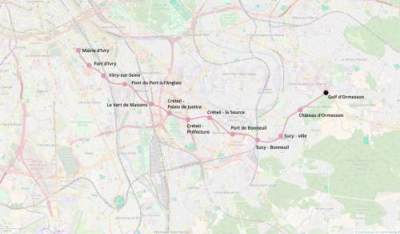

M7 Sud-Est - Ormesson
M7 Sud-Est - Ormesson
Mairie d'Ivry - Ormesson
Une extension de la ligne 7 du métro.
Ce prolongement du métro 7 permettrait de mieux relier Créteil à la fois au nord-ouest et au sud-est du Val-de-Marne. Il offrirait un axe de transport en commun performant pour le secteur en cours d'urbanisation d'Ormesson-sur-Marne actuellement très mal desservi.
Voir les autres projets associés à cette ligne
Carte

Cliquer pour agrandir
Si ce projet vous intéresse n'hésitez pas à le (re-)partagez sur les réseaux sociaux ou par courriel ou à en parler autour de vous.
Si vous souhaitez travailler à la concrétisation de ce projet, passez à l'action et contactez nous.
Commenter